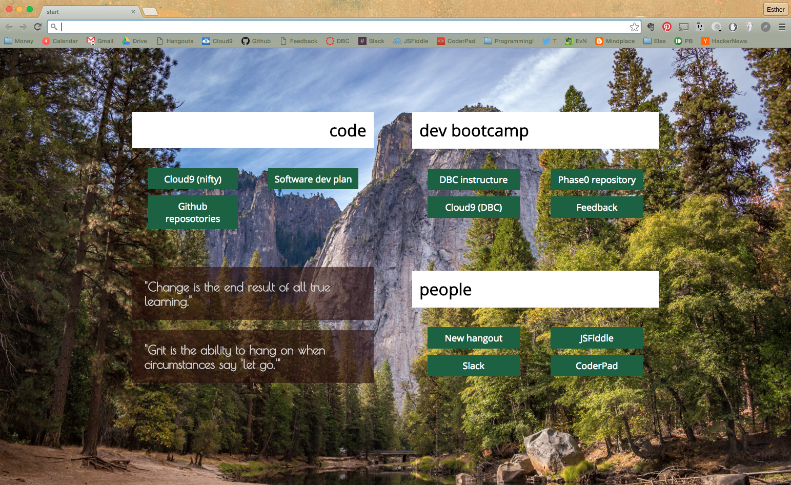

Personalized Chrome new tab/landing page, part 1
March 13, 2016
While reading an interesting Lifehacker article about customizable start-up pages, it occured to me that I could try making my own. A few minutes later, armed with this awesome little tutorial, I jumped into crafting my own new-tab/landing page.
This was one of the most exciting projects I've ever worked on because it is so useful to me right now. Building it felt faster, easier, and more personal than any HTML & CSS I've worked on to date. All I had to do was sketch up for myself what I wanted my page to have and how it would roughly look, then I jumped into the HTML and built it out. The HTML is here and the CSS is here, and you can see the page for yourself here.

After finishing the HTML and CSS, I just had to find myself a 128x128 pixel icon, and put together what seems to be my first JSON script:
I put all the files into a folder and uploaded it to chrome://extensions page by clicking "Load unpacked extension". Seeing this made me so very happy:

And that was it! Part 2 will be to see if I can turn this into an actual extension for Chrome so that it doesn't have to keep loading from my desktop.